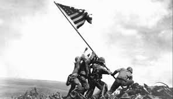
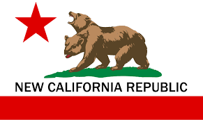
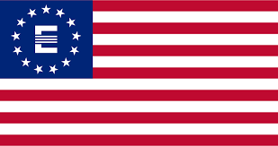
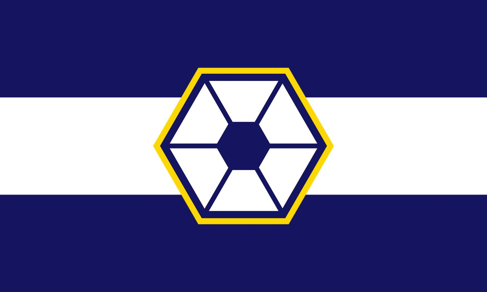

The first time history seemed intresting was in the third grade when i learned abou the revolutinary war and after that learned about the world wars and veitnam

Around the same time I got into history I found out about fallout and it bluw me away especial the first two games and new vegas


A couple of years later i decied to give the star wars movies a try and I loved them (exepet the sequls)
